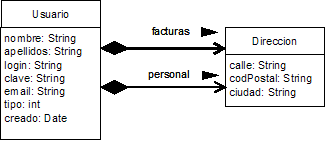
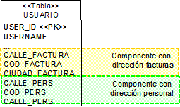
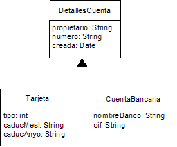
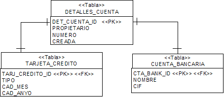
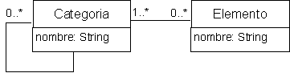
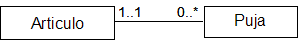
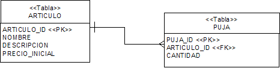
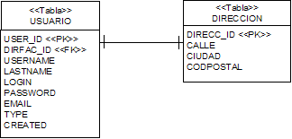
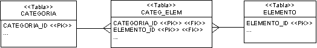

Relaciones entre objetos
En esta sesión hablaremos sobre cómo expresar algunas relaciones entre objetos con Hibernate. Vamos a explicar el concepto de persistencia transitiva, para entender cómo se puede propagar el estado persistente de los objetos relacionados ente sí. Veremos cómo incluir en los ficheros de mapeado (ficheros con extensión "hbm.xml") de las clases persistentes, las relaciones entre dichas clases. Concretemente hablaremos de las relaciones de composición, herencia y asociaciones.
Persistencia transitiva
Las aplicaciones reales no triviales no trabajan con objetos individuales sino con grafos de objetos, debido a las relaciones (asociación, composición, herencia...) entre las clases correspondientes. Si trabajamos con un grafo de objetos, resulta un trabajo arduo y tedioso el realizar las operaciones para cambiar el estado de los objetos de forma manual. La persistencia transitiva es una técnica que nos permite propagar la persistencia a subgrafos transient o detached de forma automática.
Hay varios modelos de persistencia transitiva. Hibernate utiliza el suyo propio. Por ejemplo, en una relación padre-hijo (hablaremos de esta relación más adelante) en la que el hijo es un objeto de tipo value, el ciclo de vida del hijo depende únicamente del padre. Es decir, cuando se realiza una operación save sobre el padre, el hijo también la sufre, si el padre es borrado, el hijo también, etc.
Con respecto a las asociaciones, Hibernate puede analizar las asociaciones entre los objetos para determinar su estado, de forma que una instancia se convierte en persistente cuando la aplicación crea una referencia a dicha instancia desde otra que ya es persistente. Para ello, Hibernate proporciona un estilo de cascada (cascade-style) para cada mapeado de una asociación, de forma que "lee" el estilo declarado y propaga las operaciones a los objetos asociados de forma automática.
Por defecto, Hibernate no navega a través de la asociación cuando realiza una búsqueda de objetos transient o detached, por lo que realizar una operación save, delete o update, no afectará a las instancias asociadas. Si, para una asociación particular, deseamos activar la persistencia transitiva (de forma que una instancia se convierte en persistente cuando la aplicación crea una referencia a dicha instancia desde otra que ya es persistente), deberemos indicarlo con el atributo cascade, cuando especificamos la asociación.
Para cada operación básica en una sesión de Hibernate, como por ejemplo persist(), delete(), lock(), refresh() y evict(), se proporciona el correspondiente valor para el atributo cascade: persist, delete, lock, refresh, y evict, respectivamente. Si queremos que una operación se propague a través de la asociación, debemos indicarlo en el documento de mapeado, por ejemplo:
<one-to-one name="person" cascade="persist"/>
Se pueden combinar varios estilos:
<one-to-one name="person" cascade="persist,delete,lock"/>
Incluso podemos especificar cascade=all para especificar que todas las operaciones deberían propagarse a través de la asociación. Por defecto cascade=none especifica que no se debe propagar ninguna operación
Se utiliza un estilo especial de cascada, delete-orphan, que se aplica solamente en las asociaciones uno-a-muchos, que indica que la operación delete() debería aplicarse a cualquier objeto hijo que es eliminado de la asociación.
Si la "vida" del objeto hijo depende totalmente de la "vida" del padre lo especificaremos mediante cascade="all,delete-orphan".
Si mapeamos una asociación (bien a un único elemento o a una colección de elementos) con cascade="all", estaremos "marcando" la asociación como un estilo de relación padre/hijo, en la que las operaciones save/update/delete del padre provocarán operaciones save/update/delete en el hijo o hijos.
Composición
Vamos a tomar como ejemplo el siguiente modelo de objetos, formado por las clases Usuario y Direccion, tal y como se muestra en la Figura 3.1

En términos de modelado de objetos, la asociación entre Usuario y Dirección es una clase de agregación (una relación "parte de"). La agregación es una forma fuerte de asociación: tiene una semántica adicional referente al ciclo de vida de los objetos. En nuestro caso, lo que tenemos es una forma todavía más fuerte de asociación: se trata de una composición, en la que el ciclo de vida de la "parte" depende del ciclo de vida del "todo".
Los expertos en modelado de objetos y diseñadores UML argüirán que no hay diferencia entre la composición y otros tipos más débiles de asociación cuando se trata de una implementación en Java. Pero en el contexto de una ORM, hay una gran diferencia: una clase componente es a menudo un candidato a un tipo value.
Vamos a establecer la correspondencia entre Direccion, considerándolo como un tipo value, y Usuario, que será un tipo entity. ¿Afecta ésto de alguna forma a la implementación de nuestras clases POJO?
Java en sí mismo, no tiene el concepto de composición: una clase o atributo no puede ser marcado de ninguna forma como componente o compositor. La única diferencia es la identificación del objeto: un componente no tiene identidad, por lo que la clase componente persistente no requiere ninguna propiedad que la identifique. La composición existente entre Usuario y Direccion es una noción a nivel de meta-datos; solamente tenemos que decirle a Hibernate que Direccion es de tipo value en el documento de correspondencia (usaremos los términos correspondencia y mapeado indistintamente).
Hibernate utiliza el término componente para una clase definida por el usuario que se quiere hacer persistente en la misma tabla que la entidad propietaria, tal y como se muestra a continuación. (El uso aquí del término componente no tiene nada que ver con el concepto de componente software).
<class
name="Usuario"
table="USUARIO">
<id
name="id"
column="USER_ID"
type="long">
<generator class="native"/>
</id>
<property
name="nombre"
column="USERNAME"
type="string"/>
<component
name="direccionPersonal"
class="Direccion">
<property name="calle"
type="string"
column="CALLE_PERS"
not-null="true"/>
<property name="ciudad"
type="string"
column="CIUDAD_PERS"
not-null="true"/>
<property name="codPostal"
type="short"
column="COD_PERS"
not-null="true"/>
</component>
<component
name="direccionFacturas"
class="Direccion">
<property name="calle"
type="string"
column="CALLE_FACTURA"
not-null="true"/>
<property name="ciudad"
type="string"
column="CIUDAD_FACTURA"
not-null="true"/>
<property name="codPostal"
type="short"
column="COD_FACTURA"
not-null="true"/>
</component>
...
</class>
Hemos declarado los atributos persistentes de Direccion dentro del elemento <component>. La etiqueta <component> mapea las propiedades de un objeto hijo a columnas de la tabla de una clase padre. El atributo name indica el nombre de la propiedad que representa al objeto hijo. El atributo class es opcional, y representa el nombre de la clase componente; por defecto toma el valor del tipo del nombre de la propiedad, mediante reflection. La etiqueta <property>, como ya hemos visto anteriormente, declara una propiedad persistente de la clase.
La clase Java Usuario tiene declarado un atributo de tipo Direccion que se denomina direccionPersonal, para expresar la relación de composición entre Usuario y Direccion. En este caso, Usuario es la clase padre, y Dirección la clase hija que mapeamos como un componente, con las propiedades calle, ciudad y codPostal.
Para especificar el mapeado de direccionFacturas, que es la otra propiedad del tipo Direccion, reutilizamos la misma clase del componente anterior (Direccion) para mapear dicha propiedad en la tabla USUARIO.
Como resultado, en la Figura 3.2 se muestra cómo los atributos de la clase Direccion se han convertido en persistentes en la misma tabla que la entity Usuario.

Notar que en este ejemplo hemos modelado la composición como unidireccional. No podemos navegar desde Direccion a Usuario. Hibernate soporta composiciones tanto unidireccionales como bidireccionales. Solamente hemos mostrado el primer caso por ser el más común.
Cuando se establece una correspondencia entre clases utilizando componentes, como en el caso anterior con la clase Direccion, la principal limitación de las clases componente es que no son posibles las referencias compartidas. Es decir, no tienen su propia entidad de base de datos (clave primaria), por lo que una dirección particular no podrá ser referenciada por ningún otro objeto excepto por uno que sea una instancia de Usuario.
Herencia
La herencia es la carácterísitca más evidente de las diferencias estructurales entre el mundo orientado a objetos y el mundo relacional. Los sistemas orientados a objetos permiten modelar las relaciones "es un" (herencia) y "tiene un" (asociación). Los modelos basados en SQL proporcionan únicamente una relación "tiene un" entre entidades.
Hay tres aproximaciones diferentes para representar una jerarquía de herencia. Aunque solamente vamos a analizar una de ellas, consistente en representar una relación "es un" como relaciones "tiene un" (mediante asociación con claves ajenas).
Según esta aproximación, cada subclase que declara propiedades persistentes (incluyendo clases abstractas, e incluso interfaces), tiene su propia tabla. Cada tabla contiene columnas solamente para cada propiedad no heredada (declarada en la propia subclase) junto con una clave primaria que también es clave ajena de la tabla que representa la super-clase.
Consideremos el siguiente ejemplo, mostrado en la Figura 3.3, en el que DetallesCuenta representa una clase abstracta, con información sobre cuentas asociadas con usuarios. Cada usuario puede elegir estrategias de pago diferentes, representadas como subclases de DetallesCuenta.

En este caso, si una instancia de la clase Tarjeta se convierte en persistente, los valores declarados en las propiedades de la superclase DetallesCuenta se convierten en persistentes como una nueva fila de la tabla DetallesCuenta. Solamente los valores de las propiedades declaradas por la subclase se vuelven persistentes como una nueva fila de la tabla Tarjeta. Las dos filas se enlazan por su valor de clave primaria compartida. Posteriormente, la instancia de la subclase puede recuperarse de la base de datos uniendo (mediante una operación join) la tabla de la subclase con la tabla de la super-clase (veremos cómo realizar consultas en la siguiente sesión).
En la Figura 3.4 mostramos las tablas asociadas a la jerarquía de herencia del ejemplo.

La principal ventaja de esta estrategia es que el modelo relacional está completamente normalizado. Para especificar el mapeado Hibernate utilizamos el elemento <joined-subclass>, tal y como se muestra en el siguiente código XML.
<?xml version="1.0"?>
<hibernate-mapping>
<class
name="DetallesCuenta"
table="DETALLES_CUENTA">
<id
name="id"
column="DET_CUENTA_ID"
type="long">
<generator class="native"/>
</id>
<property
name="propietario"
column="PROPIETARIO"
type="string"/>
<joined-subclass
name="Tarjeta"
table="TARJETA_CREDITO">
<key column="TARJ_CRED_ID"/>
<property
name="tipo"
column="TIPO"/>
...
</joined-subclass>
...
</class>
<hibernate-mapping>
Explicamos el código anterior:
- La clase DetallesCuenta corresponde con la tabla DETALLES_CUENTA.
- El nuevo elemento <joined-subclass> se utiliza para hacer corresponder una subclase con una nueva tabla (en el ejemplo: TARJETA_CREDITO). Para la clase CuentaBancaria el mapeado se haría de forma similar.
- Se requiere una clave primaria para la tabla TARJETA_CREDITO; también tendrá una restricción de clave ajena correspondiente con la clave primaria de la tabla DETALLES_CUENTA . Una búsqueda de un objeto TarjetaCredito requerirá una operación join de las dos tablas (DETALLES_CUENTA y TARJETA_CREDITO).
Como podemos observar, volvemos a hacer uso de la etiqueta <key> que define la clave ajena en la tabla TARJETA_CREDITO, y hace referencia a la clave primaria de la tabla DETALLES_CUENTA (mediante el atributo column).
Asociaciones
El manejo de asociaciones entre clases y las relaciones correspondientes entre tablas constituye el eje central de ORM. La mayoría de problemas difíciles involucrados en la implementación de una solución ORM están relacionadas con la gestión de las asociaciones.
El modelo de asociaciones de Hibernate es extremadamente rico, aunque en esta sesión solamente mostraremos el mapeado de aquellas asociaciones más habituales. En el manual de referencia de Hibernate podéis consultar todas las opciones de mapeado posibles.
Las asociaciones en Hibernate son inherentemente unidireccionales (puesto que las asociaciones, a nivel de lenguaje Java, son también unidireccionales). Es importante destacar que Hibernate no gestiona asociaciones persistentes. Esta decisión se tomó debido a que los objetos Hibernate, a diferencia de los entity beans, no se asume que estén siempre bajo el control de un contenedor (que realizaría la gestión de dichas asociaciones). En una aplicación Hibernate, el comportamiento de una instancia no persistente es el mismo que el de una instancia persistente. Por lo tanto, a la hora de implementar las asociaciones de los POJOs, si queremos manipular una asociación, debemos escribir exactamente el mismo código que escríbiríamos sin Hibernate. Si una asociación es bidireccional, se deben considerar ambos extremos de la relación.
Por ejemplo, supongamos el diagrama de la figura 3.5 con la clase Categoria. Una Categoria puede anidarse dentro de otra Categoria, lo que se puede expresar como una asociación recursiva de Categoria hacia sí misma. Cada Categoria puede tener muchas categorías hijas, pero solamente una Categoría padre. Es por lo tanto, una relación de uno-a-muchos.

La plantilla para implementar el código para la asociación recursiva anterior es ésta:
public class Categoria implements Serializable {
private String nombre;
private Categoria padreCategoria;
private Set hijosCategoria = new HashSet();
public Categoria() {}
}
Para permitir una navegación bidireccional de la asociación, se requieren dos atributos. El atributo padreCategoria implementa el extremo con un valor de la asociación y se declara de tipo Categoria. El extremo de la asociación con valores múltiples se implementa con el atributo hijosCategoria, que debe ser una colección de valores. Elegimos el tipo Set, ya que no permite duplicados, e inicializamos la variable de instancia con una nueva instancia de HashSet. Hibernate requiere el uso de interfaces para atributos de tipo colección. Así por ejemplo, debemos utilizar java.util.Set en lugar del tipo HashSet.
Necesitaremos añadir métodos para asignar/consultar categorías padre (setPadreCategoria/getPadreCategoria) y categorias hijo (setHijosCategoria/getHijosCategoria).
El procedimiento básico para añadir una Categoria hija a una Categoria padre se asemejaría a:
Categoria padre = new Categoria(); Categoria hija = new Categoria(); hija.setPadreCategoria(padre); padre.setHijosCategoria().add(hija);
Es decir, siempre que creemos una asociación entre una Categoria padre y una Categoria hija se requerirán dos acciones:
- Debemos asignar la nueva categoría (eliminando la anterior, ya que una categoría solamente puede tener una categoría padre),
- La categoría hija debe añadirse a la colección de categorías hijo del padre.
Ya que esto es así, es una buena idea añadir un método a la clase Categoria que agrupe estas operaciones, permitiendo la reutilización y además ayudaremos a asegurar la corrección de las operaciones sobre las asociaciones:
public void addCategoriaHija (Categoria hija) {
if (hija == null)
throw new IllegalArgumentException("¡Categoría hija nula!");
if (hija.getPadreCategoria() != null)
hija.getPadreCategoria().getHijosCategoria().remove(hija);
hija.setPadreCategoria(this);
hijosCategoria.add(hija);
}
El método addCategoriaHija no solamente reduce las líneas de código cuando se trabaja con objetos Categoria, sino que refuerza la cardinalidad de la asociación. Se evitan, por lo tanto, Los errores derivados de obviar alguna de las dos acciones requeridas. Este tipo de agrupación de operaciones debería proporcionarse siempre que sea posible.
Podríamos también querer que el método addCategoriaHija estuviese visible de forma externa solamente para categorías hija, por lo que podríamos convertir dicho método en privado. Hibernate no tiene en cuenta si los métodos de las clases son privados o públicos.
Consideremos ahora que la clase Categoria tiene, a su vez, una relación de muchos-a-muchos con la clase Elemento, tal y como se muestra en la figura 3.5., que es bidireccional.
En el caso de una asociación muchos-a-muchos, ambos extremos se implementan con atributos de tipo colección. Por lo tanto, añadiremos nuevos atributos y métodos para acceder a la clase Elemento desde la clase Categoria, tal y como se muestra en el siguiente código:
public class Categoria {
...
private Set elementos = new HashSet();
...
public Set getElementos() {
return elementos;
}
public void setElementos(Set elementos) {
this.elementos = elementos;
}
}
El código para la clase Elemento es similar al código para la clase Categoria. Añadimos el atributo con la colección de categorías, los métodos de acceso estándares, y un método que simplifique la gestión de la asociación:
public class Elemento {
private String nombre;
private String descripcion;
...
private Set categorias = new HashSet();
...
public Set getCategorias() {
return cagetorias;
} ...
private void setCategorias (Set categorias) {
this.categorias = categorias;
}
public void addCategoria (Categoria categoria) {
if (categoria == null)
throw new IllegalArgumentException("¡Categoría nula!");
categoria.getElementos().add(this);
categorias.add(categoria);
}
}
El método addCategoria() es similar al método addCategoriaHija de la clase Categoria. Es utilizado por un cliente para manipular la relación entre Elemento y Categoria. El añadir métodos similares a éste para la gestión de las asociaciones no es la única forma de mejorar el modelo de implementación del dominio. También podemos añadir lógica a los métodos de acceso
Asociación MANY-TO-ONE
A continuación vamos a ver cómo establecemos la correspondencia OR para la asociación muchos-a-uno (many-to-one), por ser de las más frecuentes.
Asociación MANY-TO-ONE UNIDIRECCIONAL
Consideremos primero el caso unidireccional. Por ejemplo la asociación de la Figura 3.6 desde Puja a Articulo (estas clases suponemos que se encuentran en un sistema dedicado a subastas de diferentes artículos, en el que los clientes pujan por conseguir dichos artículos), es un ejemplo de la asociación más sencilla en ORM.

Se trata de una asociación muchos-a-uno (many-to-one) desde Puja a Articulo. Recordemos que las asociaciones son direccionales, también podríamos llamar a la asociación inversa desde Articulo a Puja como una asociación uno-a-muchos (one-to-many). En el contexto de la persistencia de objetos, no estamos interesados en si "muchos" significa realmente "dos" o "un máximo de cinco" o "sin límite".
La implementación de los objetos Java para este diagrama es:
public class Puja {
...
private Articulo articulo;
public void setArticulo(Articulo articulo) {
this.articulo = articulo;
}
public Articulo getArticulo() {
return articulo;
}
...
}
public class Articulo {
private Long id;
...
public Long getId() {
return id;
}
public void setId(Long id) {
this.id = id;
}
...
}
Y el mapeado Hibernate para esta asociación es:
<class name="Puja" table="PUJA">
<id name="id" column="PUJA_ID">
<generator class="native">
</id>
...
<many-to-one
name="articulo"
column="ARTICULO_ID"
class="Articulo"
not-null="true"/>
</class>
<class name="Articulo" table="ARTICULO">
<id name="id" column="ARTICULO_ID">
<generator class="native"/>
</id>
...
</class>
Utilizamos la etiqueta <many-to-one> con los siguientes atributos:
- name: nombre de la propiedad.
- column: nombre de la clave ajena.
- class: nombre de la clase asociada (por defecto tiene el valor del tipo de la propiedad, determinado mediante reflection.
- not-null: permite la generación de la restricción de no nulo para las columnas de clave ajena.
Hemos especificado el atributo not-null porque no queremos tener una puja sin ningún artículo asociado.
Otros atributos opcionales para la etiqueta <many-to-one> son los siguientes:
- cascade: especifica qué operaciones tienen que propagarse desde el objeto padre al objeto asociado.
- unique: permite la generación de la restricción de unicidad sobre la clave ajena (esto haría que la multiplicidad efectiva de la asociación fuese one-to-one).
Podéis consultar en el Manual de Referencia de Hibernate todas las opciones posibles para la etiqueta <many-to-one> en el apartado 5.1.10.
Las sentencias SQL asociadas con el mapeado many-to-one unidireccional anterior serían:
create table Puja (PUJA_ID bigint not null primary key, ARTICULO_ID bigint not null ...) create table Articulo (ARTICULO_ID bigint not null primary key ...)
Este mapeado se denomina asociación unidireccional many-to-one. La columna ARTICULO_ID en la tabla PUJA es una clave ajena correspondiente con la clave primaria de la tabla ARTICULO.
Asociación MANY-TO-ONE(ONE-TO-MANY) BIDIRECCIONAL
Si necesitamos obtener todas las pujas para un artículo particular, necesitamos hacer que la asociación sea bidireccional (en cuyo caso podríamos haberla llamado también asociación bidireccional one-to-many) , por lo que sustituiríamos la clase Articulo del caso unidireccional por la siguiente:
public class Articulo {
...
private Set pujas = new HashSet();
public void setPujas(Set pujas) {
this.pujas = pujas;
}
public Set getPujas() {
return pujas;
}
public void addPuja(Puja puja) {
puja.setArticulo(this);
pujas.add(puja);
}
...
}
El código de addPuja sería como implementar una asociación gestionada en el modelo de objetos.
Un mapeado para esta asociación bidireccional sería la siguiente:
<class name="Puja" table="PUJA">
<id name="id" column="PUJA_ID">
<generator class="native">
</id>
...
<many-to-one
name="articulo"
column="ARTICULO_ID"
class="Articulo"
not-null="true"/>
</class>
<class
name="Articulo"
table="ARTICULO">
...
<set name="pujas"
inverse="true"
cascade="all-delete-orphan">
<key column="ARTICULO_ID"/>
<one-to-many class="Puja"/>
<set/>
</class>
La etiqueta <one-to-many> indica que se trata de una asociación uno a muchos. El atributo class especifica el nombre de la clase asociada. Fijaos que no necesitamos declarar ningún atributo column, ni tampoco el nombre de la tabla mediante el atributo table
La etiqueta <key> define la clave ajena en la tabla asociada PUJA. La estructura de la tabla para esta asociación se muestra en la Figura 3.7.

Para la etiqueta <set> utilizamos el atributo inverse, de esta forma estamos indicando a Hibernate de forma explícita qué extremo de la asociación se debería sincronizar con la base de datos. En este ejemplo, le estamos diciendo a Hibernate que debería propagar los cambios realizados en el extremo Puja de la asociación a la base de datos, ignorando los cambios realizados solamente en la colección de pujas de la clase Articulo (propiedad pujas). Así, si solamente realizamos una llamada a articulo.getPujas().add(puja), los cambios no se convertirán en persistentes. Esto es consistente con el comportamiento de Java sin utilizar Hibernate: si una asociación es bidireccional, tenemos que crear el enlace en los dos extremos de la asociación, no solamente en uno.
Ejemplo:
articulo.getPujas().add(puja); //El artículo ahora "conoce" la relación entre Articulo y Puja puja.setArticulo(articulo); //La puja ahora "conoce" la relación entre Articulo y Puja session.persist(articulo); //La relación entre Articulo y Puja no se guarda en la BD session.persist(puja); //La relación entre Articulo y Puja se guarda en la BD
También para la etiqueta <set>, utilizamos el atributo cascade,que indica a Hibernate lo que hemos denominado persistencia transitiva, y especifica qué operaciones deberían propagarse desde el objeto padre hasta el objeto asociado. En este caso, estamos indicando a Hibernate que convierta en persistente una nueva instancia de Puja (es decir, la almacena en la BD) si está referenciada por un Articulo persistente. El atributo cascade es direccional: se aplica solamente en un extremo de la asociación.
Si especificamos la operación delete para el atributo cascade, estamos estableciendo una relación padre/hijo. En una relación padre/hijo, la entidad padre es responsable del ciclo de vida de sus entidades hijo asociadas. La semántica es la misma que la de la composición (mediante el uso de componentes Hibernate), pero en este caso, solamente se ven implicadas entidades (Puja no es de tipo value). La ventaja de utilizar una relación padre-hijo es que el hijo puede ser recuperado de forma individual o referenciado directamente por otra entidad (los objetos de tipo value no pueden compartirse).
Concretamente, el atributo cascade="all-delete-orphan" indica lo siguiente:
- Cualquier nuevo elemento instanciado Puja se convierte en persistente si dicha Puja es referenciada por un Articulo persistente (sería equivalente a especificar solamente cascade="save-update"). Cualqueir Puja persistente debería borrarse si es referenciada por un Articulo cuando el artículo es borrado.
- Cualquier Puja persistente debería ser borrada si se elimina de la colección de pujas de un Articulo persistente. (Hibernate asumirá que solamente estaba referenciado por este artículo y lo considerará huérfano).
Con este mapeado hemos conseguido que una Puja sea eliminada de la base de datos si es eliminada de la colección de pujas del Articulo (o es eliminada si el propio Articulo es eliminado).
El atributo cascade para la etiqueta <set> es opcional, su valor por defecto es cascade="none".
El procedimiento básico para añadir una puja a un artículo se parecería a este código:
Articulo unArtic = new Articulo(); Puja unaPuja = new Puja(); unaPuja.setArticulo (unArtic); unArtic.getPujas().add(unaPuja);
Fijaos que es idéntico al código que hemos utilizado para
Las sentencias SQL asociadas con el mapeado many-to-one bidireccional anterior serían:
create table Puja (PUJA_ID bigint not null primary key, ARTICULO_ID bigint not null ...) create table Articulo (ARTICULO_ID bigint not null primary key ...)
Fijaos que son las mismas sentencias para el caso unidireccional, como para el bidireccional. Ello se debe a que la direccionalidad solamente tiene sentido en el modelo de objetos. En el modelo de datos no cabe hablar de relaciones unidireccionales o bidireccionales.
Asociación ONE-TO-MANY
En este caso, solamente especificaremos el caso unidireccional.
Siguiendo con el ejemplo de las clases Puja y Artículo, el código Hibernate que expresa el mapeado one-to-many desde Articulo hasta Puja es el siguiente:
<class name="Articulo" table="ARTICULO">
<id name="id" column="ARTICULO_ID">
<generator class="native"/>
</id>
...
<set name="pujas">
<key column="ARTICULO_ID"
not-null="true"/>
<one-to-many class="Puja"/>
</set>
</class>
<class name="Puja" table="PUJA">
<id name="id" column="PUJA_ID">
<generator class="native">
</id>
</class>
En una relación one-to-many la columna de clave ajena (etiqueta key) por defecto puede ser nula, por eso añadimos el atributo not-null="true" si queremos que dicha clave ajena no sea nula.
Este tipo de mapeado, utilizando una clave ajena, genera las siguientes sentencias SQL:
create table Articulo (ARTICULO_ID bigint not null primary key, ...) create table Puja (PUJA_ID bigint not null primary key, ARTICULO_ID bigint not null, ...)
Otra forma de expresar esta relación one-to-many unidireccional, mucho más utilizada que la anterior es mediante el uso de una tabla intermedia (también denominada tabla join):
<class name="Articulo" table="ARTICULO">
<id name="id" column="ARTICULO_ID">
<generator class="native"/>
</id>
...
<set name="pujas" table="ArticuloPuja">
<key column="ARTICULO_ID"/>
<many-to-many column="PUJA_ID"
unique="true"
class="Puja"/>
</set>
</class>
<class name="Puja" table="PUJA">
<id name="id" column="PUJA_ID">
<generator class="native">
</id>
</class>
La tabla intermedia a la que hacemos referencia la hemos llamado ArticuloPuja y contiene una clave ajena (ARTICULO_ID) que hace referencia a la tabla ARTICULO. También contiene otra clave ajena que hemos denominado PUJA_ID (de la tabla PUJA), que en este caso se convierte en clave primaria de la tabla join al establecer la restricción de unicidad (unique=true) sobre dicha clave.
Para especificar la clave primaria en la tabla join, utilizamos la etiqueta <many-to-many> con los siguientes atributos:
- column: nombre de la clave ajena.
- unique: permite la generación de la restricción de unicidad sobre la clave ajena. Esto hace que la multiplicidad de la asociación sea efectivamente one-to-many
- class: nombre de la clase asociada.
El mapeado anterior one-to-many unidireccional, utilizando una tabla intermedia, genera las siguientes sentencias SQL:
create table Articulo (ARTICULO_ID bigint not null primary key, ...) create table ArticuloPuja (ARTICULO_ID bigint not null, PUJA_ID bigint not null primary key) create table Puja (PUJA_ID bigint not null primary key, ...)
Asociación ONE-TO-ONE
Asociación ONE-TO-ONE UNIDIRECCIONAL
Hemos hablado de la relación entre Usuario y Direccion como una relación de composición. Normalmente, ésta es la forma más sencilla de representar una relación uno-a-uno (one-to-one), ya que el ciclo de vida de una clase es casi siempre dependiente del ciclo de vida de la otra clase. Pero si queremos utilizar una tabla para Direccion y otra para Usuario, tratándolas así como entidades, entonces las clases tienen una verdadera relación one-to-one. Vamos a especificar un mapeado de una relación one-to-one unidireccional desde Usuario a Direccion. En este caso, comenzamos con el siguiente mapeado para Direccion:
<class name="Direccion" table="DIRECCION">
<id name="id" column="DIRECC_ID">
<generator class="native"/>
</id>
<property name="calle"/>
<property name="ciudad"/>
<property name="codPostal"/>
</class>
Démonos cuenta de que ahora Direccion requiere una propiedad que sea un identificador de la clave primaria (ya no es una clase componente). Hay dos formas de representar una relación one-to-one en Hibernate. Vamos a ver solamente una de ellas, que utiliza una clave ajena.
La forma más sencilla de representar la asociación desde Usuario a su Direccion para recibir facturas es utilizar una correspondencia <many-to-one> con una restricción de unicidad sobre la clave ajena. Esto puede sorprendernos, ya que no parece una descripción muy acertada para una asociación one-to-one. Sin embargo, desde el punto de vista de Hibernate, no hay mucha diferencia entre estos dos tipos de asociaciones con clave ajena. Por lo tanto, añadimos una columna de clave ajena denominada DIRFAC_ID en la tabla Usuario, con lo que tendríamos la siguiente correspondencia para Usuario:
<class name="Usuario" table="USUARIO">
<id name="id" column="USER_ID">
...
<many-to-one name="direccionFacturas"
class="Direccion"
column="DIRECC_ID"
cascade="all"
unique="true"/>
</class>
De esta forma, estamos estableciendo la restricción de que solamente haya un único usuario por dirección, con lo que convertimos esta relación en one-to-one. Además, al establecer el valor de cascade en "all", indicamos que una Direccion debe hacerse persistente, así como eliminarse, al crear una asociación (o eliminarla) desde un usuario persistente.
Las tablas correspondientes al modelo relacional se muestran en la Figura 3.8:

Y las sentencias SQL asociadas al mapeado one-to-one unidireccional son:
create table DIRECCION(DIRECC_ID bigint not null primary key, ...) create table USUARIO (USUARIO_ID bigint not null primary key, DIRECC_ID bigint not null unique...)
Asociación ONE-TO-ONE BIDIRECCIONAL
Si queremos que la asociación sea navegable desde Direccion a Usuario, tenemos que convertir la asociación one-to-one anterior en bidireccional. Para ello añadimos una propiedad denominada usuario (de tipo Usuario) a la clase Direccion, y establecemos la correspondencia de la propiedad usuario con la propiedad direccionFacturas como:
<class name="Direccion" table="DIRECCION">
<id name="id" column="DIRECC_ID">
<generator class="native">
</id>
<one-to-one name="usuario"
class="Usuario"
property-ref="direccionFacturas"/>
<property name="calle"/>
<property name="ciudad"/>
<property name="codPostal">
</class>
Esta correspondencia indica a Hibernate que la asociación de usuario en Direccion tiene la dirección contraria de la asociación direccionFacturas en Usuario. El atributo property-ref es opcional, y hace referencia al nombre de una propiedad de la clase asociada que hemos "unido" (joined) con la clave primaria de esta clase. Si no se especifica este atributo, se utiliza la clave primaria de la clase asociada.
Las sentencias SQL asociadas al mapeado one-to-one bidireccional son:
create table DIRECCION(DIRECC_ID bigint not null primary key, ...) create table USUARIO (USUARIO_ID bigint not null primary key, DIRECC_ID bigint not null unique...)
Asociación MANY-TO-MANY
Asociación MANY-TO-MANY UNIDIRECCIONAL
Consideremos la asociación existente entre las clases Categoria y Elemento que hemos visto al principio de esta sesión. En primer lugar trataremos el caso de que la relación sea unidirecional, por ejemplo desde Categoria hacia Elemento.
Para mapear esta asociación necesitaremos una tabla intermedia que represente la asociación. Cada fila en esta tabla representa un enlace entre una categoría y un elemento. El mapeado es el siguiente:
<class name="Categoria">
<id name="id" column="CATEGORIA_ID">
<generator class="native"/>
</id>
<set name="elementos" table="CATEG_ELEM">
<key column="CATEGORIA_ID"/>
<many-to-many column="ELEMENTO_ID"
class="Elemento"/>
</set>
</class>
<class name="Elemento">
<id name="id" column="ELEMENTO_ID">
<generator class="native"/>
</id>
</class>
En este caso la clase Categoria implementa la asociación mediante un atributo denominado elementos de tipo coleccion (en concreto de tipo Set), que hace referencia al conjunto de objetos de tipo Elemento, a través de una tabla asociada intermedia denominada CategElement. En dicha table, la columna denominada CATEGORIA_ID es una clave ajena que hace referencia a la clave primaria de la clase Categoria.
La etiqueta <many-to-many> indica la relación many-to-many entre Categoria y Elemento, y utilizamos los siguientes atributos:
- column: nombre de la columna de clave ajena
- class: nombre de la clase asociada
El esquema de base de datos para esta asociación se muestra en la Figura 3.9. Observar que la clave primaria de la tabla asociada está formada por las dos claves ajenas.

Mientras que el modelo de objetos es el mostrado anteriormente en la Figura 3.5.
Para crear una asociación podemos utilizar el siguiente código Java:
... Transaction tx = session.beginTransaction(); Categoria cat = (Categoria)session.get(Categoria.class,categoryId) cat.getElementos().add(elem); tx.commit(); ...
En un sistema real, podríamos evitar el utilizar una asociación many-to-many. Normalmente habrá otra información que podamos añadir para las instancias asociadas (por ejemplo, la fecha en la que un elemento fué añadido a una categoría), y la mejor forma de representar ésto es mediante una clase de asociación (associated class) intermedia. En Hibernate, podríamos mapear dicha clase de asociación como una entidad y utilizar dos asociaciones one-to-many en ambos extremos. No obstante, si necesitamos implementar una asociación many-to-many entre dos entidades, podemos utilizar lo explicado en este apartado.
Asociación MANY-TO-MANY BIDIRECCIONAL
Consideremos ahora que la asociación existente entre las clases Categoria y Elemento sea bidirecional, es decir, podemos navegar desde Categoria hacia Elemento y viceversa.
Al igual que antes, necesitamos una tabla intermedia que represente la asociación. Cada fila en esta tabla representa un enlace entre una categoría y un elemento. El mapeado es el siguiente:
<class name="Categoria">
<id name="id" column="CATEGORIA_ID">
<generator class="native"/>
</id>
<set name="elementos" table="CategElement">
<key column="CATEGORIA_ID"/>
<many-to-many column="ELEMENTO_ID"
class="Elemento"/>
</set>
</class>
<class name="Elemento">
<id name="id" column="ELEMENTO_ID">
<generator class="native"/>
</id>
<set name="categorias" inverse="true" table="CategElement">
<key column="ELEMENTO_ID"/>
<many-to-many column="CATEGORIA_ID"
class="Categoria"/>
</set>
</class>
En este caso, el mapeado para la clase Elemento es similar al mapeado para la clase Categoria. Además, hemos declarado un extremo de la asociación como inverse. En este caso, al tratarse de una asociación bidireccional podemos elegir cualquiera de los dos extremos.
La creación de una asociación entre objetos en Java, requeriría el código siguiente:
cat.getElementos().add(elem); elem.getCategorias().add(cat);
Solamente hemos presentado un subconjunto de mapeado de asociaciones disponibles en Hibernate. El resto de opciones son menos usuales o son variaciones de las asociaciones descritas. Así, por ejemplo, como ya hemos comentado, en aplicaciones reales las relaciones muchos-a-muchos (many-to-many), tienden a no utilizarse, ya que siempre podemos representarlas como dos asociaciones many-to-one utilizando una clase intermedia. De esta forma, el modelo es mucho más fácilmente extensible, por lo que aconsejamos no utilizar las relaciones muchos-a-muchos en nuestras aplicaciones.
Recomendamos mantener mapeados de asociaciones sencillas, utilizando las queries de Hibernate para tareas más complejas.